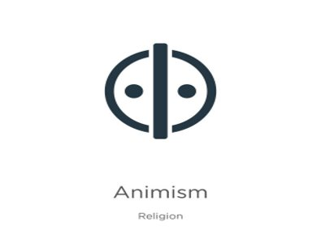
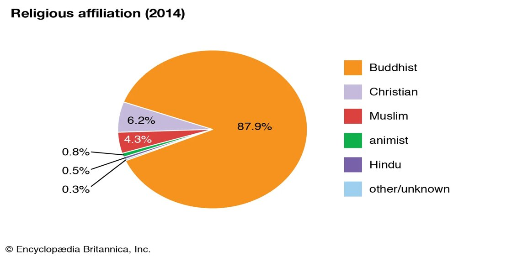

|  | |||
Buddhism is one of the world's largest religions and originated 2,500 years ago in India. Buddhists believe that the human life is one of suffering, and that meditation, spiritual and physical labor, and good behavior are the ways to achieve enlightenment, or nirvana. Buddhism, also known as Buddha Dharma, and Dharmavinaya, is an Indian religion or philosophical tradition based on teachings attributed to the Buddha. It originated in present-day North India as a śramaṇa–movement in the 5th century BCE, and gradually spread throughout much of Asia via the Silk Road. |
Christianity is an Abrahamic monotheistic religion based on the life and teachings of Jesus of Nazareth. It is the world's largest and most widespread religion with roughly 2.4 billion followers representing one-third of the global population. |
Islam is an Abrahamic monotheistic religion centered on the Quran and the teachings of Muhammad. Adherents of Islam, called Muslims, number approximately 1.9 billion globally and are the world's second-largest religious population after Christians. |
A person who believes all natural things, such as plants, animals, rocks, and thunder, have spirits and can influence human events: He gave up his agnosticism and became an animist. They were animists who believed in the spirit world. Animism is the belief that objects, places, and creatures all possess a distinct spiritual essence. Animism perceives all things—animals, plants, rocks, rivers, weather systems, human handiwork, and in some cases words—as animated and alive. |
A Hindu views the entire universe as God's and everything in the universe as God. Hindus believe that each person is intrinsically divine and the purpose of life is to seek and realise the divinity within all of us. The Hindu belief is totally non-exclusive and accepts all other faiths and religious paths. Hinduism, is an Indian religion or dharma, a religious and universal order or way of life by which followers abide. As a religion, it is the world's third-largest, with over 1.2–1.35 billion followers, or 15–16% of the global population, known as Hindus. |
|||
|  | |||
| Explore | Group | Follow Us |
|---|---|---|
About |
Aung Bhone Khant |
|
|
Copy right to ©2023, Year 7 HELIO group 2 |
||